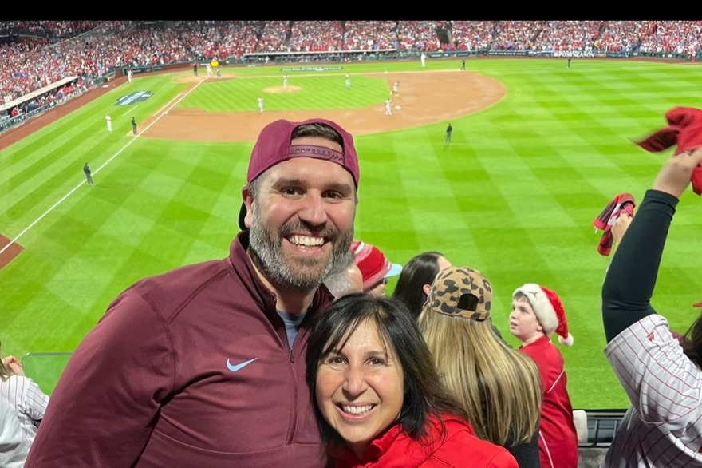

Ruth opens the doors
Ruth Corcoran founds Corcoran Communications in Bear Creek, Pennsylvania. Public relations, design, content, and events, for clients who mostly arrive by word of mouth.
Founded 2000 · Quakertown, PA
A mother started this firm in 2000. Her son runs it now. When you hire us, the owner is the one who answers the phone, writes the plan, and does the work.
Clients from Main Street to Disney on Ice · U.S. Navy veteran owned & operated

IN PLAIN ENGLISHThere is no account team here. You call Greg, and Greg does the work.
GREG QUINN, OWNER AND LEAD STRATEGIST
Greg Quinn owns Corcoran Communications and leads every account himself.
He served five years in the U.S. Navy, from 2006 to 2011, as a cryptologic technician aboard the USS Chancellorsville, and reached Petty Officer 2nd Class. He is a graduate of Temple University.
He came into the family firm and built its digital half. Heading sales and digital, he added SEO, social media, digital marketing, and lead generation to a lineup his mother had built on public relations, design, content, and events. In July 2023 he took over as owner.
His client work runs from Main Street to national tours: Disney on Ice, Ringling Bros. and Barnum & Bailey, Pittsburgh Craft Beer Week, SenArt Films, Spirit Financial Credit Union, Choice One Community Credit Union, Tri-County Collision, Distasio, Kowalski & Yelen, ILM, and Cork Bar & Restaurant. The fuller work history is on his LinkedIn profile.
BEAR CREEK IN 2000, QUAKERTOWN TODAY

Ruth Corcoran opened this firm in January 2000 in Bear Creek, Pennsylvania, doing public relations, design, content, and events. She built it on a simple idea: know the client, tell the truth, and make every dollar work. The Corcoran family has been in marketing, design, and print for over half a century. Ruth retired in July 2023. The standard did not.
Ruth Corcoran founds Corcoran Communications in Bear Creek, Pennsylvania. Public relations, design, content, and events, for clients who mostly arrive by word of mouth.
Greg heads sales and digital for the firm and adds SEO, social media, digital marketing, and lead generation to what it sells. The trade changes. The client list keeps growing.
Ruth retires and Greg becomes owner of the firm his mother founded. The clients, the standard, and the name on the door all stay the same.
AI agents join the staff: two on the website side, an auditor every week and a watcher tracking Google and AI-search changes every morning, and three on advertising. On top of the five, automated watchdogs check ad spend and tracking every day. Greg still approves every change. Clients can read the reports themselves.
ONE SENIOR MARKETER, A STAFF OF AI AGENTS, AND NOTHING IN BETWEEN
The owner runs your account. The person who quotes the work is the person who does it, so nothing is lost in a hand-off and nobody has to be brought up to speed.
Five agents, each with one job. Two cover your website and the search around it: an auditor on the site every week, a watcher on Google and AI search every morning. Three watch your advertising. On top of the five, automated watchdogs check ad spend and tracking every day. Together, agents and watchdogs carry the volume that used to need a department.
You get the agents' reports the way we get them: what changed, what we did about it, and what it means for phone calls and form fills. No dashboard, no login, nothing to decode.
No annual lock-in, no early termination fee, and nothing that auto-renews on you. You keep the website either way, and we earn the next month.
OUR AGENTS SCAN YOUR SITE. YOU GET THE PLAIN-ENGLISH REPORT. NO OBLIGATION.
Got it. Your report comes back within one business day. If it is urgent, call or text 215-259-8304.
Prefer to talk? Call or text 215-259-8304 or email greg@corcoranpr.com.
STRAIGHT ANSWERS ABOUT WHO YOU ARE HIRING
Greg Quinn, the owner. He runs every account personally, from the first audit through the work itself. There is no junior account team, no coordinator in the middle, and no hand-off after you sign. Call or text 215-259-8304 and you are talking to the person who does the work.
No. Ruth Corcoran founded the firm in January 2000 and retired in July 2023, when her son, Greg Quinn, took over as owner. The standard she set is still the one the work is measured against, but she is not on any account.
One senior marketer, yes, plus a staff of five AI agents that carry the volume work a junior team used to do. Greg has run campaigns for everything from Main Street shops to national tours; the agents now handle the scanning, checking, and reporting that used to take a department. The weekly reports show you the work happening. And because every project starts with a free audit and a flat quote, if a job ever needs more hands than we have, you hear that up front, not after a deposit.
No. Monitoring and marketing plans run month to month, and you can walk anytime. We keep clients by delivering results, not by locking the door.